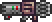

Rangers are able to attack from a distance, doing high single-target, piercing, or splash damage. They utilize weapons like bows and guns, as well as thrown objects. Ranged users must constantly acquire ammunition, unless using the Endless Quiver or Endless Musket Pouch. This can be done through crafting or purchasing from the Arms Dealer . Rangers have decent defense, and are good at killing enemies while keeping a safe distance. For many weapons that doesn't use regular ammo (such as the Nail Gun or the Candy Corn Rifle ), players can buy the ammo from the Arms Dealer while having the weapon in their inventory. There are different Arrows, Bullets, Darts and Rockets that each have their own use and effect. Using the right one in a situation can make a huge difference.
Ranged has also some subclasses wich is fun to play as challange
Gunslinger
Another straight-forward class, and one of the easiest. This subclass has few weaknesses, the highest DPS, and a massive variety of guns to choose from. The need to aim falls steeply later on, especially with rapid fire and chlorophyte bullets.
Archer
Some people have a strong love for the bow and arrow; others have decided to inject this weapon with the demonic steroids. While this subclass may not have ‘auto-aim’, it certainly doesn’t lack power... or absurdity.
Rocketeer 
Rocket launchers aren’t available until after Plantera, making feasibility difficult. One idea is to progress from Grenades, to Hellfire Arrows only, to Explosive Bullets only, and finally to rocket launchers. Try not to blow yourself up.